Soru 1Cevap: E
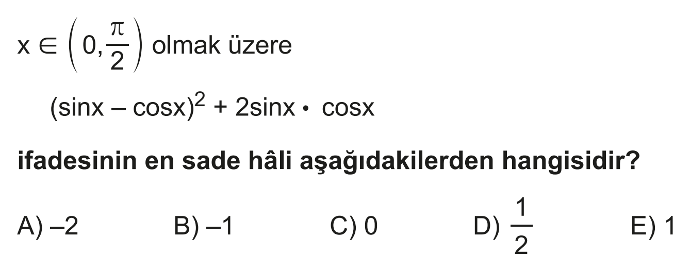
Çözüm
- $(\sin x - \cos x)^2 = \sin^2x - 2\sin x\cos x + \cos^2x$.
- $2\sin x\cos x$ eklenince $\sin^2x + \cos^2x$ kalır.
- $= 1$.
Cevap: E
Soru 2Cevap: B
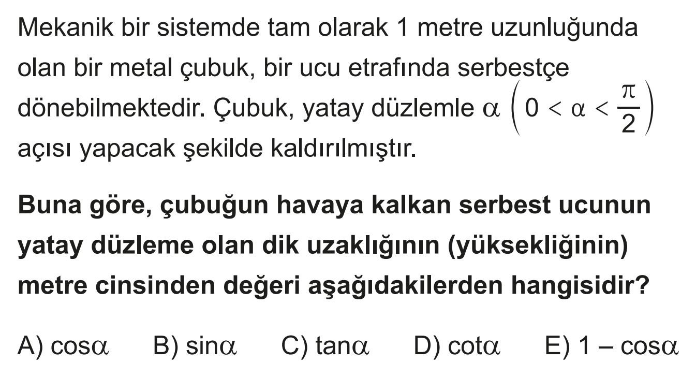
Çözüm
- Çubuk, uzunluğu 1 olan bir yarıçap gibi döner; ucu birim çember üzerindedir.
- Ucun yere dik uzaklığı noktanın ordinatıdır.
- Yükseklik $\sin\alpha$.
Cevap: B
Soru 3Cevap: A
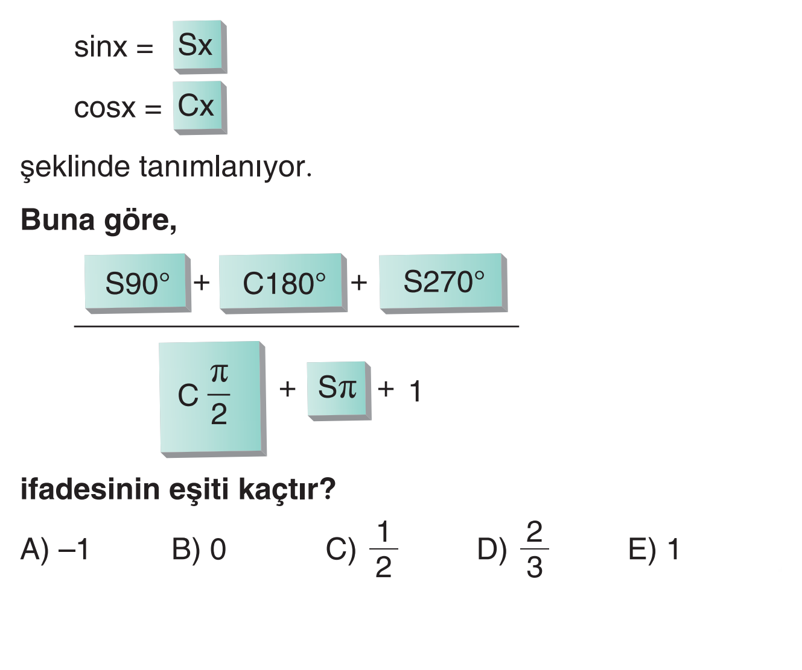
Çözüm
- Pay: $\sin90^\circ + \cos180^\circ + \sin270^\circ = 1 - 1 - 1 = -1$.
- Payda: $\cos\frac{\pi}{2} + \sin\pi + 1 = 0 + 0 + 1 = 1$.
- Sonuç $-1$.
Cevap: A
Soru 4Cevap: D
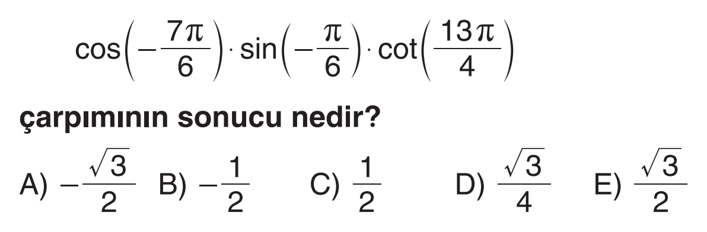
Çözüm
- $\cos\left(-\frac{7\pi}{6}\right) = \cos\frac{7\pi}{6} = -\frac{\sqrt3}{2}$.
- $\sin\left(-\frac{\pi}{6}\right) = -\frac12$; $\cot\frac{13\pi}{4} = \cot\frac{\pi}{4} = 1$.
- Çarpım $\frac{\sqrt3}{4}$.
Cevap: D
Soru 5Cevap: E
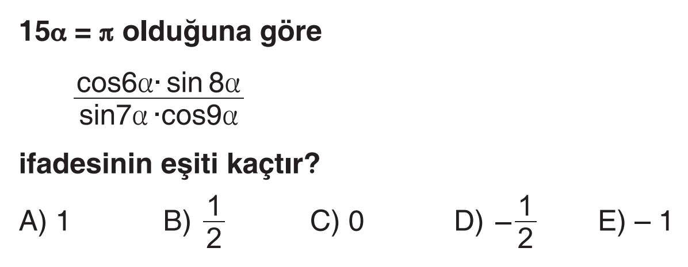
Çözüm
- $15\alpha = \pi$.
- $6\alpha + 9\alpha = \pi$ → $\cos6\alpha = -\cos9\alpha$; $8\alpha + 7\alpha = \pi$ → $\sin8\alpha = \sin7\alpha$.
- $\frac{-\cos9\alpha\cdot\sin7\alpha}{\sin7\alpha\cdot\cos9\alpha} = -1$.
Cevap: E
Soru 6Cevap: B
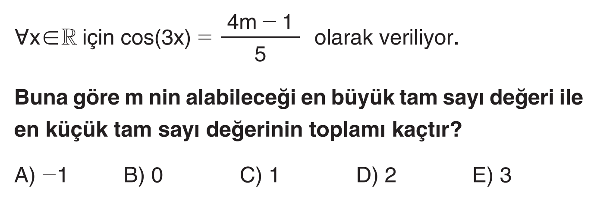
Çözüm
- $-1 \le \cos3x \le 1$ → $-1 \le \frac{4m-1}{5} \le 1$.
- $-5 \le 4m - 1 \le 5$ → $-1 \le m \le \frac32$.
- En büyük tam sayı 1, en küçük $-1$; toplam 0.
Cevap: B
Soru 7Cevap: C
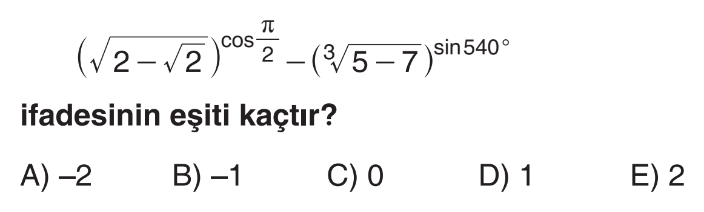
Çözüm
- $\cos\frac{\pi}{2} = 0$ ve $\sin540^\circ = \sin180^\circ = 0$.
- Sıfırdan farklı her sayının 0. kuvveti 1'dir.
- $1 - 1 = 0$.
Cevap: C
Soru 8Cevap: D
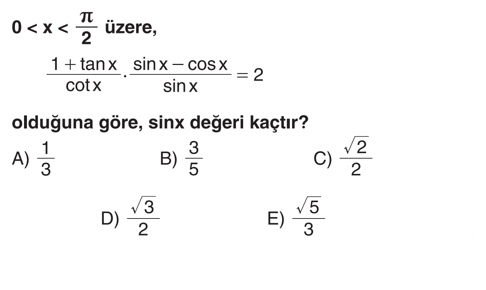
Çözüm
- $\frac{1+\tan x}{\cot x} = \tan x(1+\tan x)$, $\frac{\sin x-\cos x}{\sin x} = 1 - \cot x = \frac{\tan x - 1}{\tan x}$.
- Çarpım $(1+\tan x)(\tan x - 1) = \tan^2x - 1 = 2$ → $\tan x = \sqrt3$.
- $x = \frac{\pi}{3}$ → $\sin x = \frac{\sqrt3}{2}$.
Cevap: D
Soru 9Cevap: D
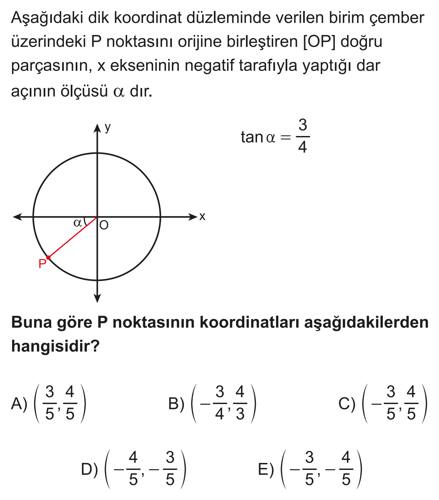
Çözüm
- $\tan\alpha = \frac34$ → kenarları 3, 4, 5 olan dik üçgen: $\cos\alpha = \frac45$, $\sin\alpha = \frac35$.
- P III. bölgede → iki koordinat da negatif.
- $P\left(-\frac45, -\frac35\right)$.
Cevap: D
Soru 10Cevap: C
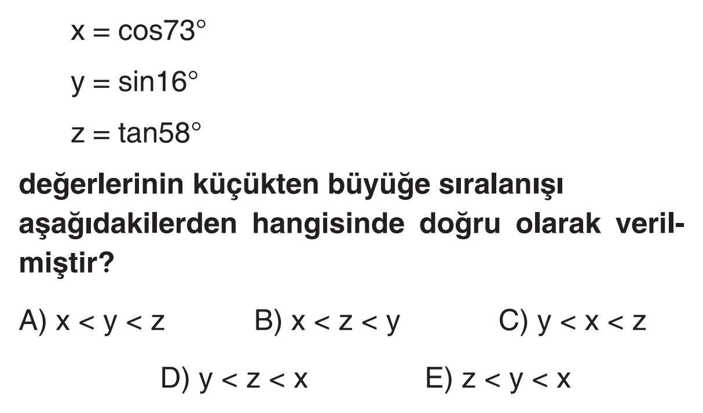
Çözüm
- $x = \cos73^\circ = \sin17^\circ$.
- $\sin16^\circ < \sin17^\circ$ → $y < x$; ikisi de 1'den küçük.
- $z = \tan58^\circ > 1$ → $y < x < z$.
Cevap: C
Soru 11Cevap: A
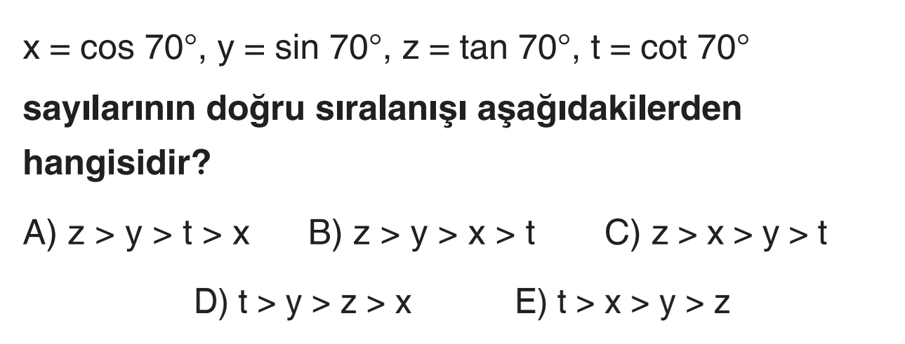
Çözüm
- $70^\circ > 45^\circ$: $\tan70^\circ > 1$ en büyük; $\sin70^\circ > \cos70^\circ$.
- $\cot70^\circ = \tan20^\circ$ ve $\cos70^\circ = \sin20^\circ$; $\tan20^\circ > \sin20^\circ$ → $t > x$.
- $\cot70^\circ = \tan20^\circ < 1$ ama $\sin70^\circ \approx 0{,}94 > \tan20^\circ \approx 0{,}36$: $z > y > t > x$.
Cevap: A
Soru 12Cevap: C
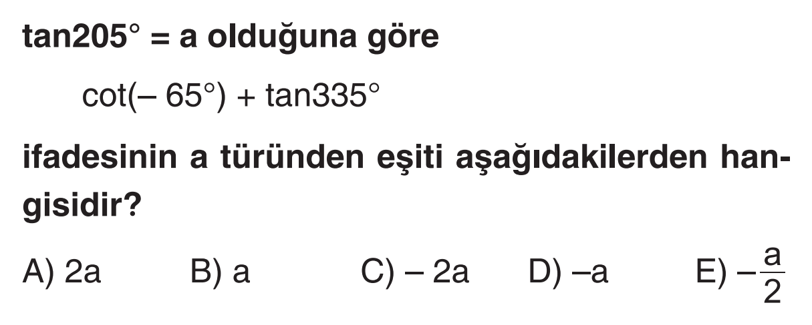
Çözüm
- $\tan205^\circ = \tan25^\circ = a$.
- $\cot(-65^\circ) = -\cot65^\circ = -\tan25^\circ = -a$; $\tan335^\circ = -\tan25^\circ = -a$.
- Toplam $-2a$.
Cevap: C
Soru 13Cevap: C
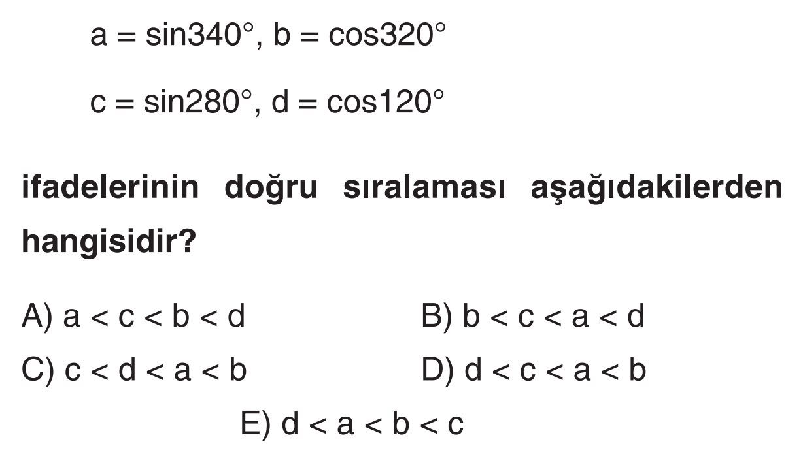
Çözüm
- $a = -\sin20^\circ$, $b = \cos40^\circ > 0$, $c = -\sin80^\circ$, $d = -\cos60^\circ = -\sin30^\circ$.
- $\sin20^\circ < \sin30^\circ < \sin80^\circ$ → $c < d < a$.
- $b$ tek pozitif: $c < d < a < b$.
Cevap: C
Soru 14Cevap: B
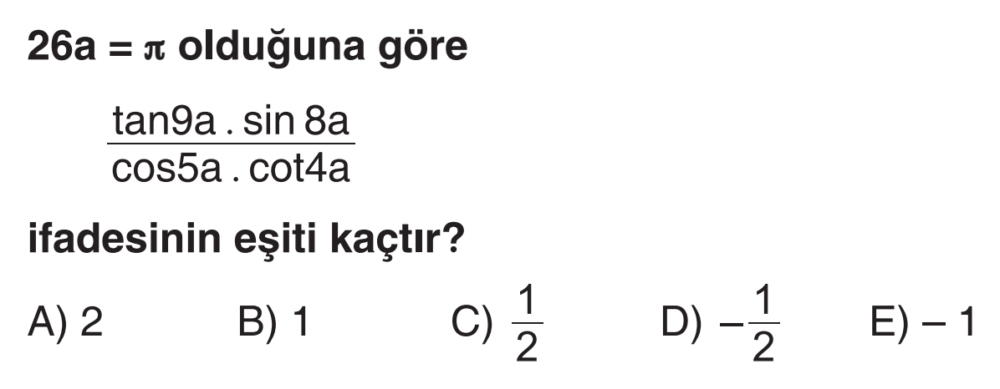
Çözüm
- $26a = \pi$ → $13a = \frac{\pi}{2}$.
- $9a + 4a = \frac{\pi}{2}$ → $\tan9a = \cot4a$; $8a + 5a = \frac{\pi}{2}$ → $\sin8a = \cos5a$.
- Oran $1$.
Cevap: B
Soru 15Cevap: C
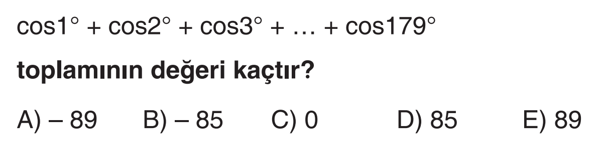
Çözüm
- $\cos(180^\circ - k) = -\cos k$.
- $\cos1^\circ + \cos179^\circ = 0$, …, $\cos89^\circ + \cos91^\circ = 0$.
- Kalan $\cos90^\circ = 0$; toplam 0.
Cevap: C
Soru 16Cevap: C
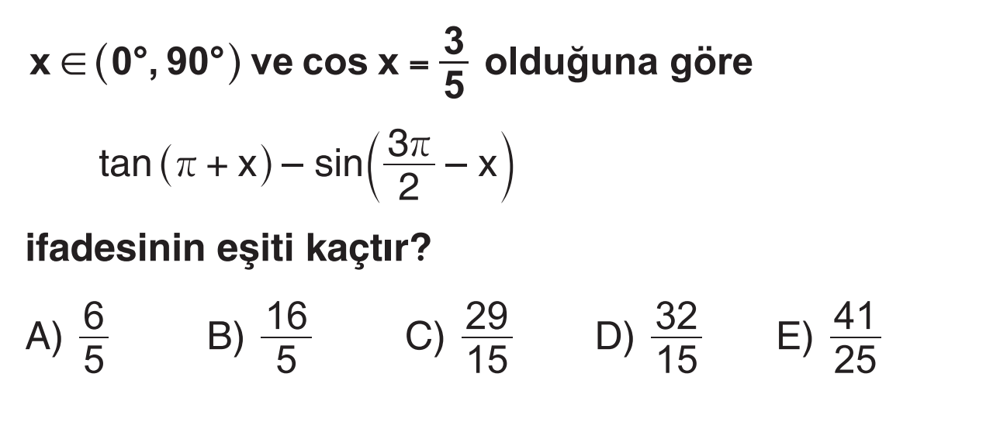
Çözüm
- $\cos x = \frac35$, dar açı → $\sin x = \frac45$, $\tan x = \frac43$.
- $\tan(\pi + x) = \tan x = \frac43$; $\sin\left(\frac{3\pi}{2} - x\right) = -\cos x = -\frac35$.
- $\frac43 + \frac35 = \frac{29}{15}$.
Cevap: C
Soru 17Cevap: D
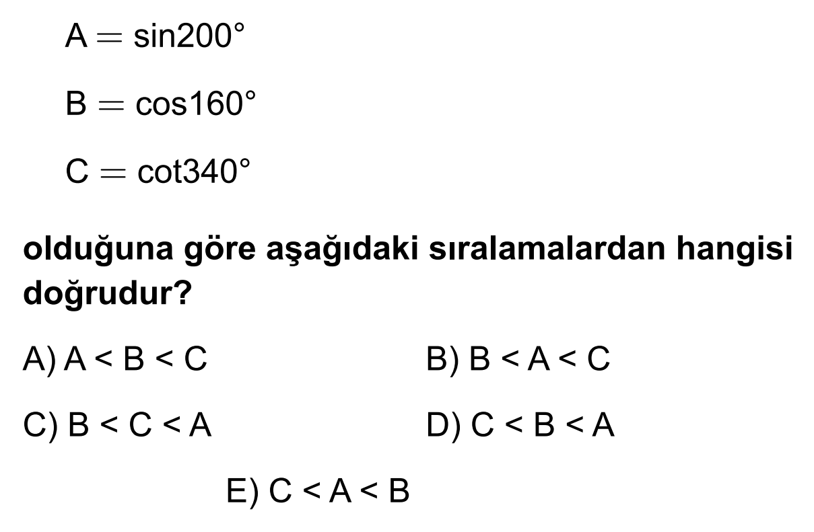
Çözüm
- $A = \sin200^\circ = -\sin20^\circ$, $B = \cos160^\circ = -\cos20^\circ$, $C = \cot340^\circ = -\cot20^\circ$.
- $0 < \sin20^\circ < \cos20^\circ < 1 < \cot20^\circ$.
- Negatifleri ters sıralanır: $C < B < A$.
Cevap: D
Soru 18Cevap: B
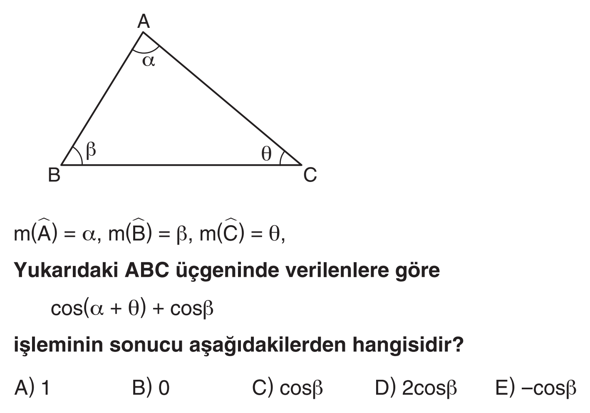
Çözüm
- Üçgende $\alpha + \theta = 180^\circ - \beta$.
- $\cos(\alpha + \theta) = \cos(180^\circ - \beta) = -\cos\beta$.
- $-\cos\beta + \cos\beta = 0$.
Cevap: B
Soru 19Cevap: C
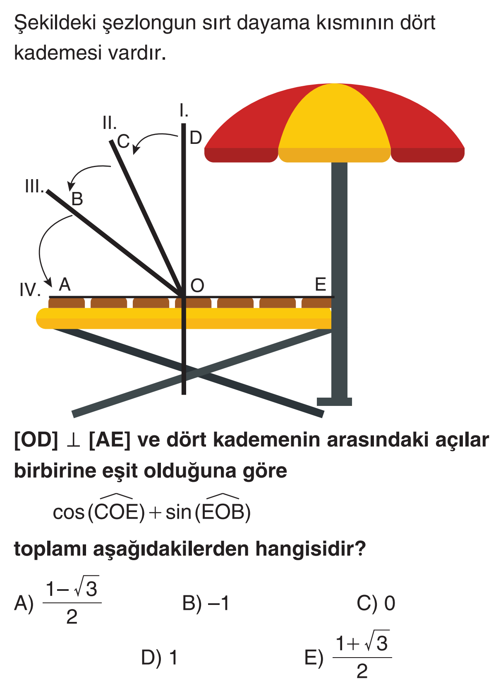
Çözüm
- $\widehat{DOA} = 90^\circ$ üç eş açıya bölünür: her biri $30^\circ$ → $\widehat{COE} = 120^\circ$, $\widehat{EOB} = 150^\circ$.
- $\cos120^\circ = -\frac12$, $\sin150^\circ = \frac12$.
- Toplam 0.
Cevap: C
Soru 20Cevap: E
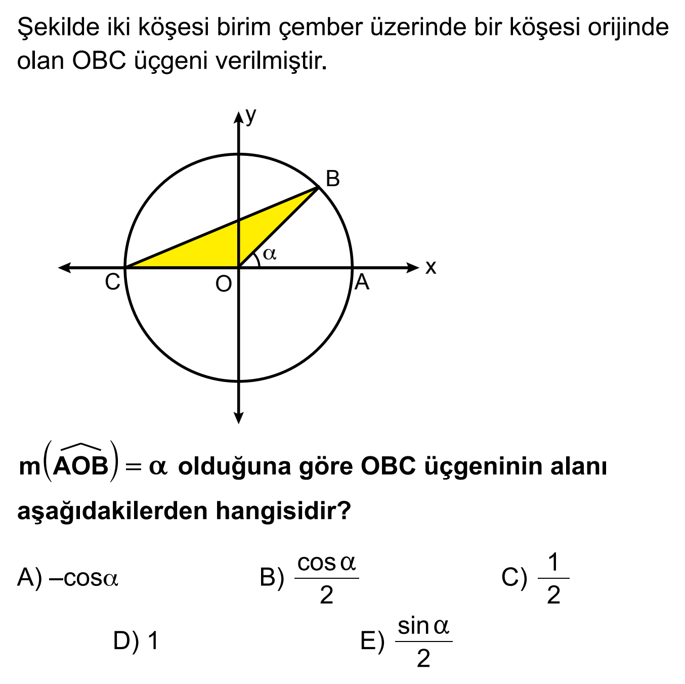
Çözüm
- $|OC| = 1$ (C, $(-1,0)$ noktası) → taban 1.
- B birim çemberde $\alpha$ açısının uç noktası; yüksekliği ordinatı $\sin\alpha$.
- Alan $\frac{1\cdot\sin\alpha}{2}$.
Cevap: E